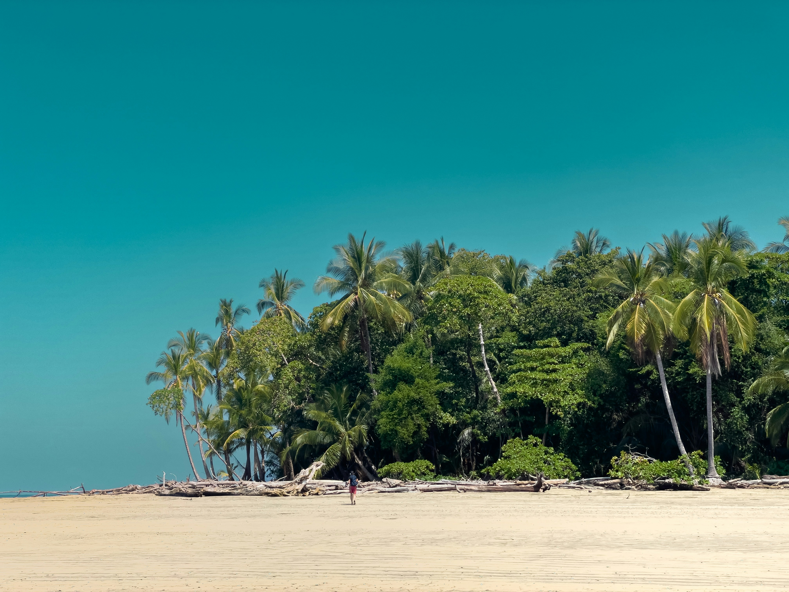
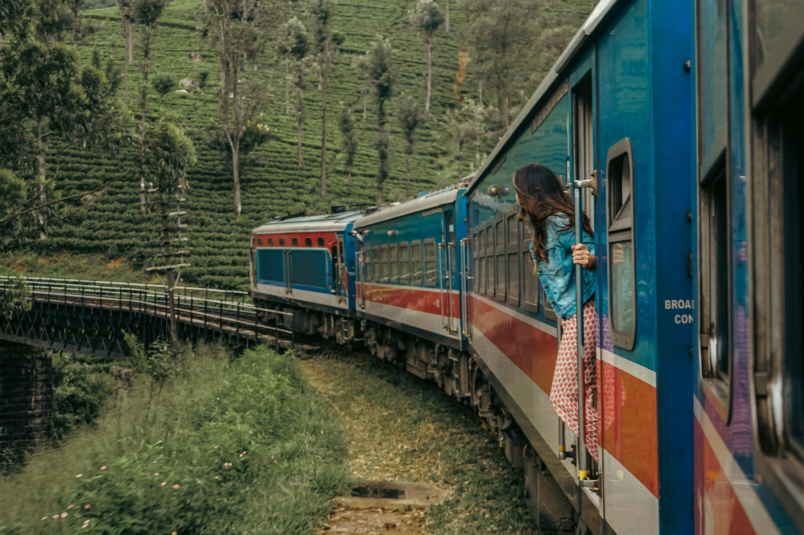

Arugam Bay is Sri Lanka's most celebrated surf destination — a crescent-shaped bay on the wild eastern coast where world-class waves, laid-back beach vibes, and spectacular sunrises create an experience unlike anywhere else on the island. Listed among the top 10 surf spots in the world by multiple international surf publications, "A-Bay" has evolved from a secret surfer hideout into a full-fledged tropical paradise that welcomes every kind of traveller.
Surrounded by lagoons, national parks, ancient ruins, and some of the most pristine beaches in Asia, Arugam Bay offers far more than just world-class surfing. It is a destination that quietly steals your heart — and keeps calling you back.

The iconic crescent bay of Arugam Bay at sunrise — Eastern Province, Sri Lanka
The Surf Scene
The Main Point at Arugam Bay consistently produces long, fast right-hand waves that can hold up to 200 metres on a good day — a surfer's dream. The surf season runs from April to October when consistent south-westerly swells roll in, making it one of Asia's most reliable surf windows.
Beyond the Main Point, there are several other breaks nearby — Pottuvil Point, Elephant Rock, and Whiskey Point — each offering different wave characteristics suited to surfers of all levels. Whether you're a complete beginner or a seasoned pro chasing barrels, Arugam Bay delivers.

Beyond the Waves
Arugam Bay's appeal extends far beyond surfing. The surrounding region is packed with incredible natural and cultural experiences that make it worthy of an extended stay.
Kumana National Park — just 40km south — is one of Sri Lanka's finest birding destinations, home to over 200 species of birds and significant populations of elephants, leopards, and crocodiles. The park's wetland ecosystem is particularly spectacular during the migratory bird season from April to July.
Lahugala National Park, en route to Arugam Bay, is famous for its gathering of wild elephants that come to feed on the beru grass growing around the tank — a stunning sight best seen at dusk.


Ancient Ruins & Hidden Temples
The Arugam Bay area is dotted with ancient Buddhist and Hindu temples that few tourists ever discover. The Muhudu Maha Viharaya — a 2,000-year-old Buddhist temple on the beach — is believed to mark the spot where a princess from India arrived to marry a local king. The temple ruins and the small stupa set against the backdrop of the ocean are hauntingly beautiful.
The nearby Pottuvil Lagoon is perfect for boat rides at sunset, where you can spot crocodiles basking on the banks, exotic birdlife in the mangroves, and the occasional elephant coming to drink at the water's edge.
Destination Info
| Where | Arugam Bay, Ampara District, Eastern Province, Sri Lanka |
| Best Time to Visit | April to October (surf season). November to March is quieter and great for cultural exploration. |
| Top Highlights | Main Point surf break, Kumana National Park, Pottuvil Lagoon, Muhudu Maha Viharaya, Elephant Rock |
| Getting There | 8-9 hour drive from Colombo via A4 highway. Nearest airport: Batticaloa (45 min). Private transfers available with GPS Lanka Travels. |
| Where to Stay | Range of beachfront guesthouses, boutique surf lodges and budget-friendly hostels lining the bay. Book in advance during peak season (June–August). |
| Local Food | Fresh seafood barbecue, lagoon crab, roti with coconut sambol, and smoothie bowls at the many beachside cafés along the bay. |
Sunset over the bay — golden hour is the most magical time at Arugam Bay